Part 107 Sectional Chart Practice: 25 Image-Based Questions
The FAA says that from October 26, 2026, the Part 107 knowledge test (UAG) will include image-based questions with excerpts of the latest sectional charts, images that are not in the testing supplement; our guide to the October 26 test changes has the details. These 25 questions are our practice for that format: each one shows an excerpt of a current FAA sectional (Washington, Seattle, Phoenix and Omaha, editions dated September 3, 2026), you get the answer and an explanation as soon as you choose, and your score appears at the end.
We wrote these questions; they are not taken from the FAA test. Tap or click an image to open it full size. Answer choices are shuffled on every attempt.
-
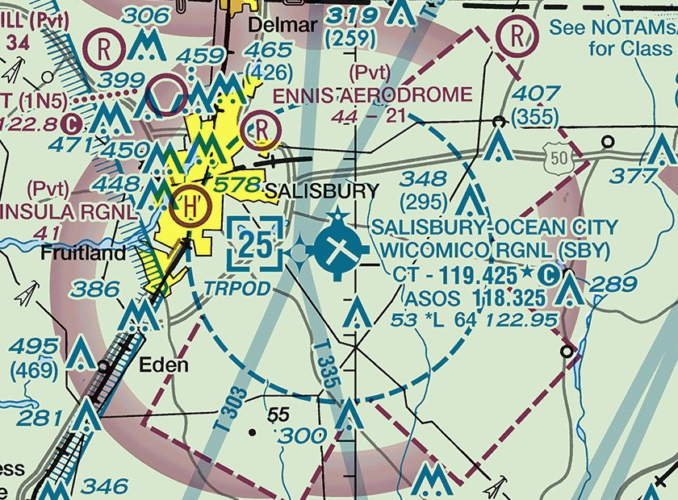
Excerpt: FAA Washington sectional, edition September 3, 2026. Not for navigation. (Refer to the figure.) What is the ceiling of the Class D airspace at SALISBURY-OCEAN CITY WICOMICO RGNL (SBY)?
The dashed blue circle is Class D airspace, and the bracketed 25 inside it is the ceiling in hundreds of feet MSL, so 2,500 ft MSL. The 64 in the data block is the longest runway (6,400 ft), not an altitude (Chart Users' Guide, Airspace: Class D; Airports).
Next question -
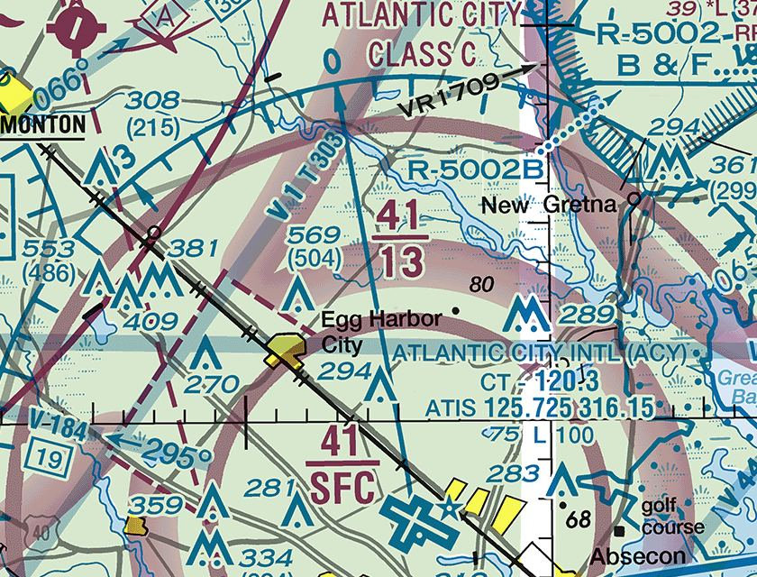
Excerpt: FAA Washington sectional, edition September 3, 2026. Not for navigation. (Refer to the figure.) What are the floor and ceiling of the Atlantic City Class C airspace in the area labeled 41 over 13?
Class C sector figures are magenta, in hundreds of feet MSL, with the ceiling written over the floor, so 41 over 13 is a shelf from 1,300 ft MSL to 4,100 ft MSL. The core that starts at the surface is the area labeled 41 over SFC (Chart Users' Guide, Airspace: Class C).
Next question -
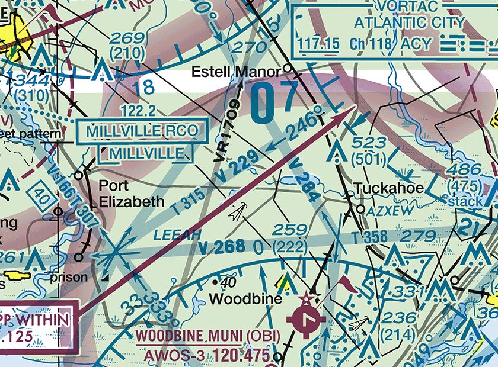
Excerpt: FAA Washington sectional, edition September 3, 2026. Not for navigation. (Refer to the figure.) What kind of military flight activity should a remote pilot expect along the route labeled VR1709 near Estell Manor?
VR means the route is flown under VFR, and a four-digit number means no segment is above 1,500 ft AGL. These low-level, high-speed routes can put military aircraft near the altitudes where small UAs fly (Chart Users' Guide, Military Training Routes; AIM 3-5-2).
Next question -
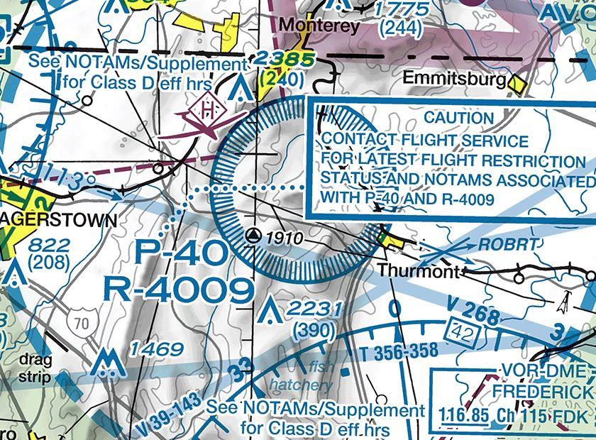
Excerpt: FAA Washington sectional, edition September 3, 2026. Not for navigation. (Refer to the figure.) Under 14 CFR Part 107, what is required before flying a small UA inside the area labeled P-40 near Thurmont?
P-40 is a prohibited area (P), here also covered by restricted area R-4009. Under 14 CFR 107.45 a small UA may not operate in a prohibited or restricted area without permission from the using or controlling agency; an ATC authorization under 107.41 does not grant that permission (Chart Users' Guide, Special Use Airspace).
Next question -
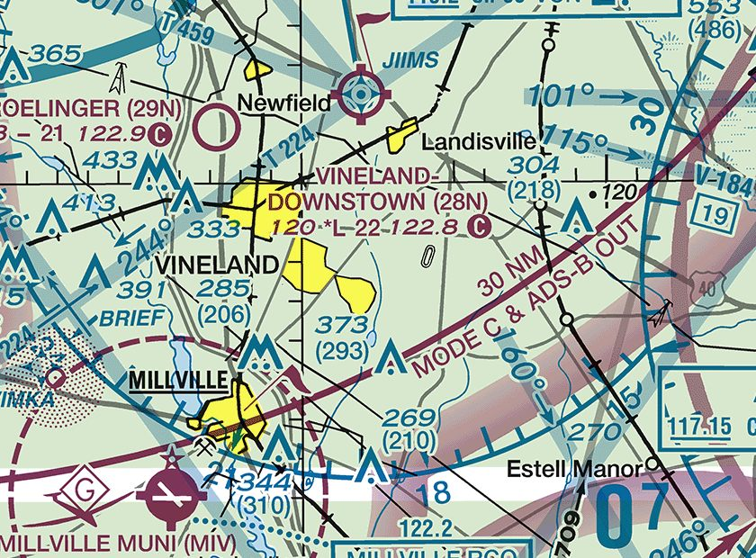
Excerpt: FAA Washington sectional, edition September 3, 2026. Not for navigation. (Refer to the figure.) A small UA will be flown under Part 107 inside the line labeled 30 NM MODE C & ADS-B OUT near Vineland. Which statement is correct?
The solid magenta line marks the Mode C veil, 30 NM around the primary Class B airport from the surface to 10,000 ft MSL, where manned aircraft need a transponder and ADS-B Out. Part 107 instead bars a small UA from operating with a transponder on or ADS-B Out transmitting unless authorized (14 CFR 107.52, 107.53), and the veil alone adds no ATC authorization requirement (Chart Users' Guide, Mode C).
Next question -
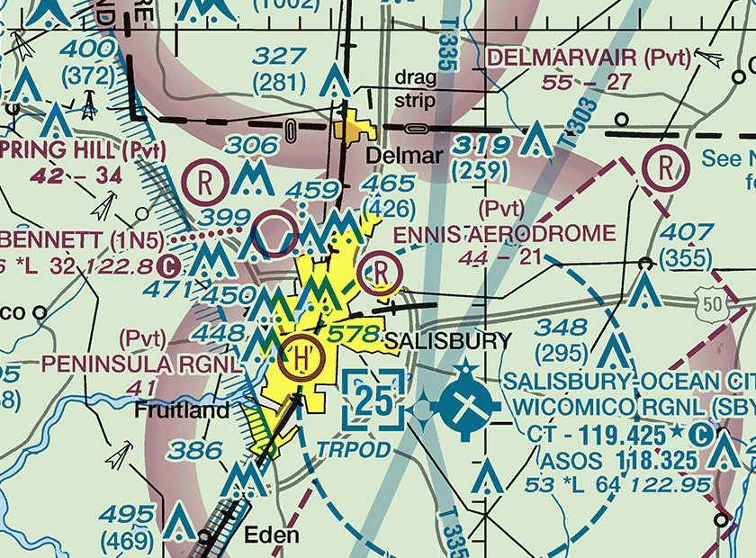
Excerpt: FAA Washington sectional, edition September 3, 2026. Not for navigation. (Refer to the figure.) What does (Pvt) above ENNIS AERODROME indicate?
(Pvt) marks a non-public-use airport shown because it has landmark value; 44 - 21 gives a 44-ft elevation, no runway lighting (dash) and a 2,100-ft runway. Private fields still have manned traffic, and 14 CFR 107.43 bars interfering with traffic at any airport (Chart Users' Guide, Airports).
Next question -
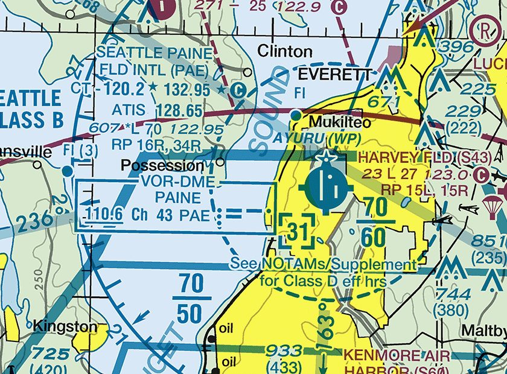
Excerpt: FAA Seattle sectional, edition September 3, 2026. Not for navigation. (Refer to the figure.) When the control tower at SEATTLE PAINE FLD INTL (PAE) is not in operation, which frequency should be used as the CTAF?
The data block reads CT - 120.2 (star) 132.95 (star) followed by a circled C, and the circled C follows the frequency that serves as the CTAF, so 132.95 is used when the part-time tower is closed. 122.95, after the elevation, lighting and runway figures, is UNICOM (Chart Users' Guide, Airports).
Next question -
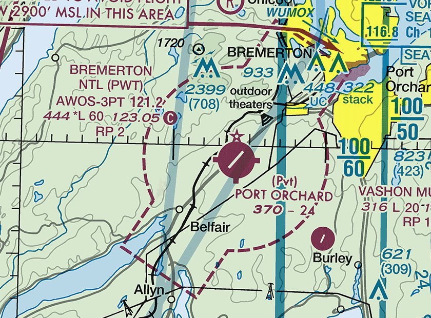
Excerpt: FAA Seattle sectional, edition September 3, 2026. Not for navigation. (Refer to the figure.) What type of airspace is at the surface at BREMERTON NTL (PWT), and is ATC authorization required to fly a small UA there?
PWT is magenta, so it has no control tower, and the dashed magenta line around it marks Class E airspace that begins at the surface. 14 CFR 107.41 requires prior ATC authorization within the lateral boundaries of a Class E surface area designated for an airport, even with no tower (Chart Users' Guide, Class E Surface Airspace).
Next question -
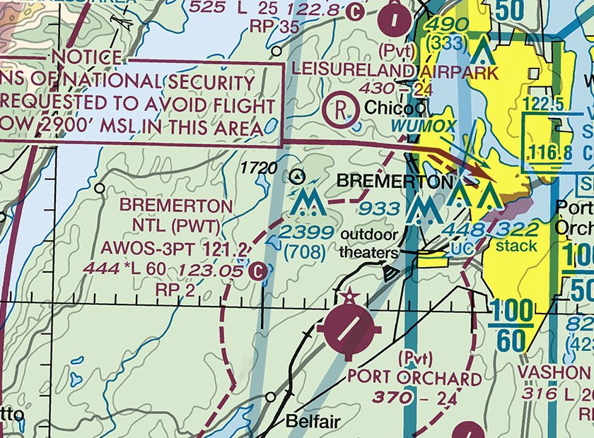
Excerpt: FAA Seattle sectional, edition September 3, 2026. Not for navigation. (Refer to the figure.) North of BREMERTON NTL (PWT), an obstruction is labeled 2399 (708). What do these figures mean?
Obstruction labels give the top in feet MSL with the height above ground in parentheses below it, and this group symbol is labeled for its highest tower. The tower rises 708 ft above the ground, far higher than a small UA normally flies, on terrain about 1,691 ft MSL (Chart Users' Guide, Land Features and Obstructions).
Next question -
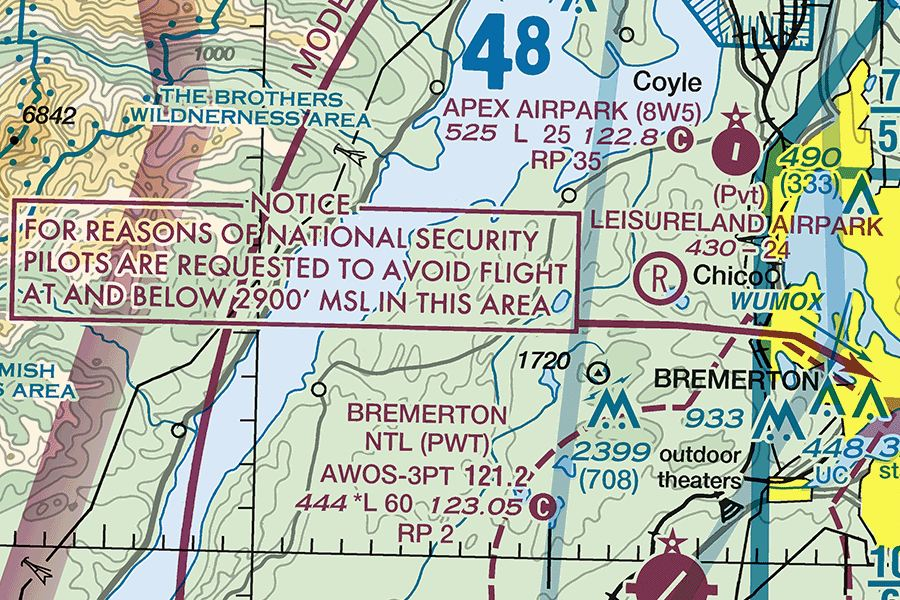
Excerpt: FAA Seattle sectional, edition September 3, 2026. Not for navigation. (Refer to the figure.) The NOTICE box points to a National Security Area at Bremerton. Which statement about this area is correct?
Pilots are requested to voluntarily avoid a National Security Area, here at and below 2,900 ft MSL. When more security is needed, flight there can be temporarily prohibited under 14 CFR 99.7 by NOTAM, and 14 CFR 107.47 requires remote pilots to comply (AIM 3-4-8; Chart Users' Guide, National Security Areas).
Next question -
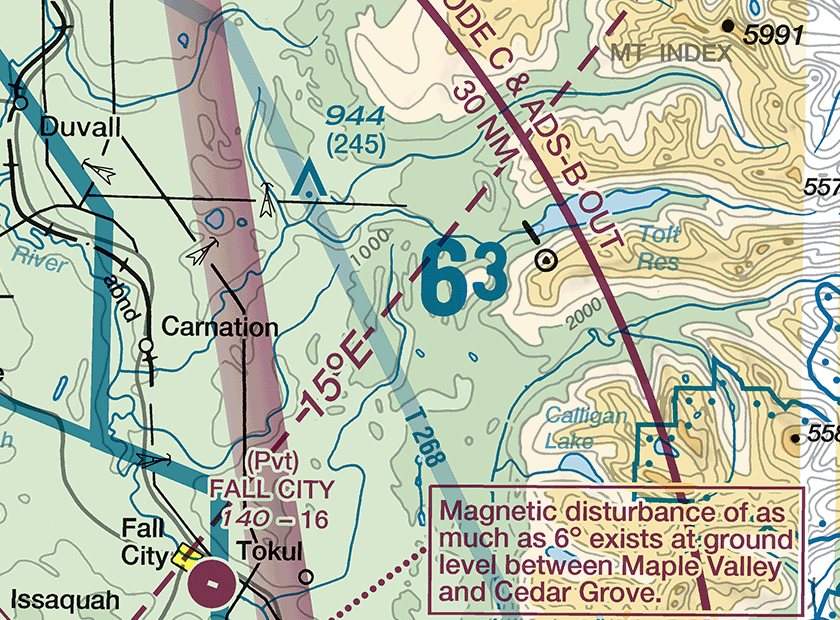
Excerpt: FAA Seattle sectional, edition September 3, 2026. Not for navigation. (Refer to the figure.) What does the large figure 63 east of Carnation represent?
Large blue figures in each 30-minute latitude/longitude quadrant are maximum elevation figures, in thousands and hundreds of feet MSL. 63 means 6,300 ft MSL: the highest known terrain or obstacle in the quadrant plus allowances, rounded up to the next 100 ft (Chart Users' Guide, Maximum Elevation Figure).
Next question -
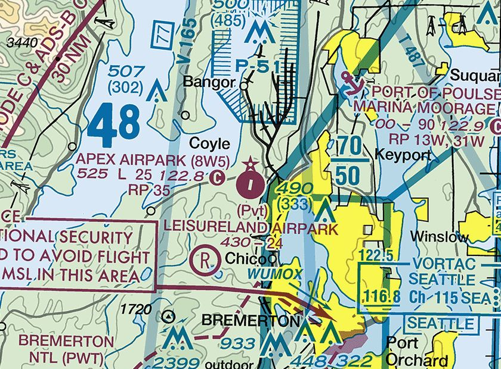
Excerpt: FAA Seattle sectional, edition September 3, 2026. Not for navigation. (Refer to the figure.) What does the L in the data block for APEX AIRPARK (8W5) mean?
In 525 L 25 122.8, the L after the 525-ft elevation means runway lighting operates from sunset to sunrise. An asterisk before it (*L) would mean lighting limitations found in the Chart Supplement, and a beacon is shown by the star above the airport symbol (Chart Users' Guide, Airports).
Next question -
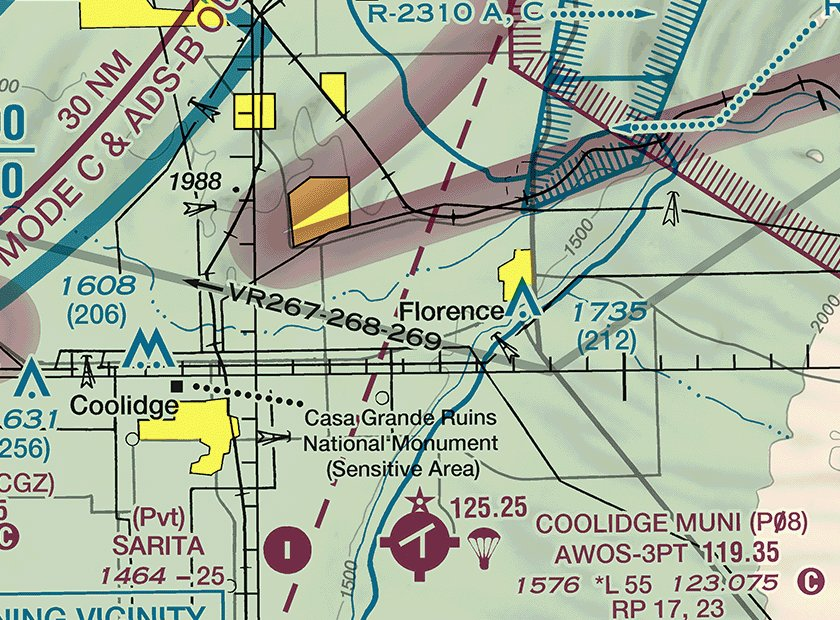
Excerpt: FAA Phoenix sectional, edition September 3, 2026. Not for navigation. (Refer to the figure.) What does the symbol next to the COOLIDGE MUNI (P08) airport symbol, shown with the frequency 125.25, indicate?
The parachute symbol with a frequency marks a parachute jumping area; 125.25 is the associated contact frequency. Jumpers and jump aircraft may be overhead, so check NOTAMs and the Chart Supplement and keep the small UA clear while jumping is active (Chart Users' Guide, Miscellaneous Activity Areas).
Next question -
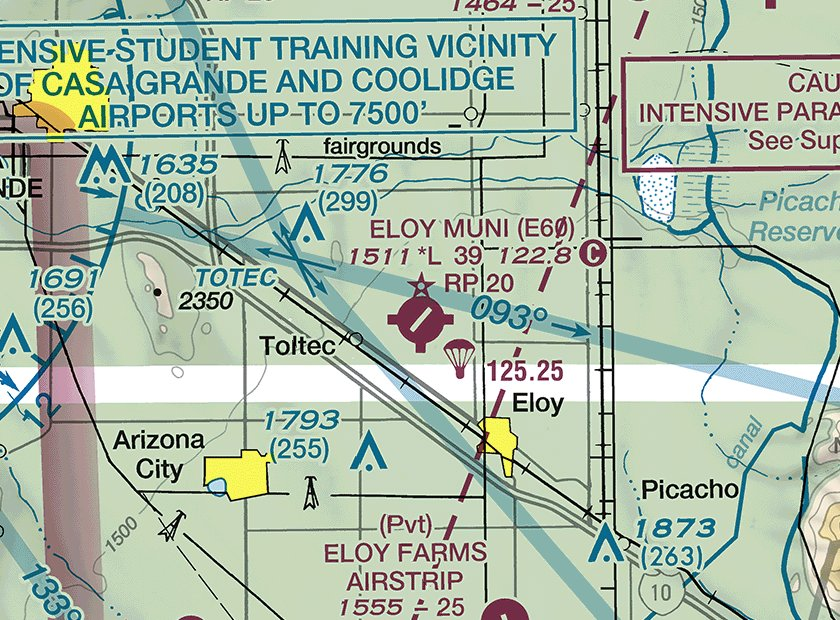
Excerpt: FAA Phoenix sectional, edition September 3, 2026. Not for navigation. (Refer to the figure.) What does RP 20 in the ELOY MUNI (E60) data block mean?
RP followed by a runway number means that runway uses a right-hand traffic pattern, so aircraft landing on runway 20 turn right and fly the pattern northwest of the runway. Knowing where pattern traffic flies helps a remote pilot avoid interfering with it, as 14 CFR 107.43 requires (Chart Users' Guide, Airports).
Next question -
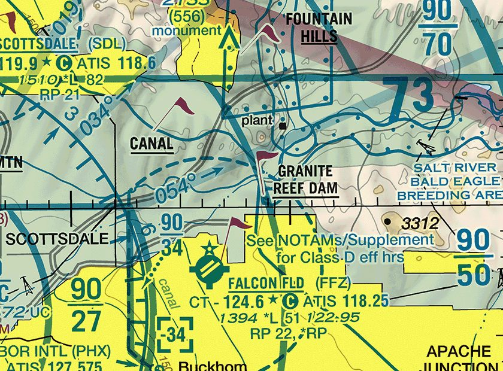
Excerpt: FAA Phoenix sectional, edition September 3, 2026. Not for navigation. (Refer to the figure.) What does the flag symbol at GRANITE REEF DAM, whose name is underlined, indicate?
A magenta flag with an underlined name is a VFR checkpoint, a landmark manned pilots use to report their position to ATC. Manned aircraft converge over checkpoints at low altitude, so watch for them when flying a small UA near one (Chart Users' Guide, VFR Checkpoints).
Next question -
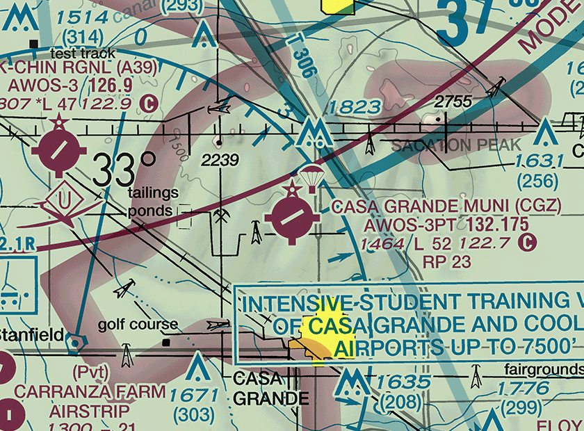
Excerpt: FAA Phoenix sectional, edition September 3, 2026. Not for navigation. (Refer to the figure.) What are the field elevation and the length of the longest runway at CASA GRANDE MUNI (CGZ)?
In 1464 L 52 122.7, the first figure is the field elevation in feet MSL and 52 is the longest runway in hundreds of feet, so 5,200 ft. RP 23 on the next line is a right traffic pattern for runway 23, not a length (Chart Users' Guide, Airports).
Next question -
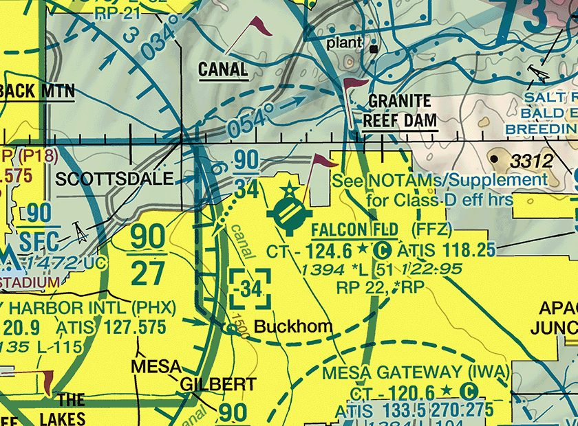
Excerpt: FAA Phoenix sectional, edition September 3, 2026. Not for navigation. (Refer to the figure.) What does the figure -34 in the dashed blue box near FALCON FLD (FFZ) indicate?
Class D ceilings are shown in hundreds of feet MSL, and a minus sign means from the surface up to but not including that altitude. Here the Class D stops below 3,400 ft MSL because the Phoenix Class B shelf labeled 90 over 34 begins at 3,400 ft MSL (Chart Users' Guide, Class D Airspace).
Next question -
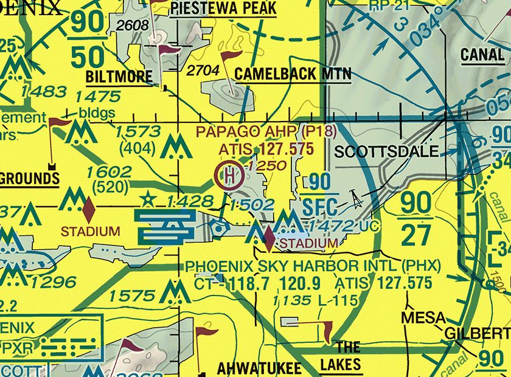
Excerpt: FAA Phoenix sectional, edition September 3, 2026. Not for navigation. (Refer to the figure.) A remote pilot plans to fly a small UA at 200 ft AGL in the Phoenix Class B sector labeled 90 over SFC. Which statement is correct?
Class B figures are blue, in hundreds of feet MSL, ceiling over floor, so 90 over SFC is Class B from the surface to 9,000 ft MSL. 14 CFR 107.41 requires prior ATC authorization to operate in Class B airspace at any height (Chart Users' Guide, Class B Airspace).
Next question -
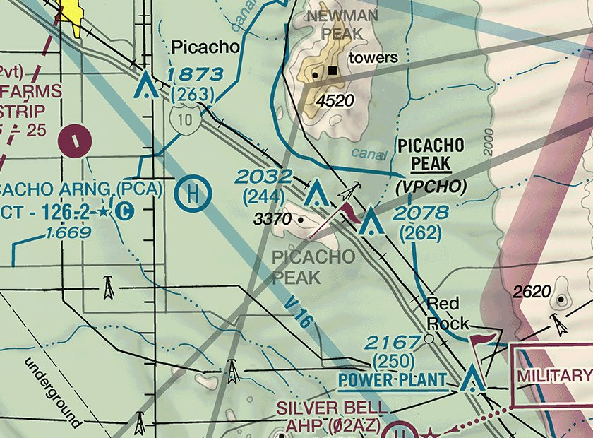
Excerpt: FAA Phoenix sectional, edition September 3, 2026. Not for navigation. (Refer to the figure.) A remote pilot flies directly over the spot elevation 3370 on PICACHO PEAK, with no structure nearby. What is the highest altitude the small UA may reach there?
A spot elevation gives the height of that point in feet MSL, so the ground there is 3,370 ft MSL. 14 CFR 107.51(b) limits a small UA to 400 ft above ground level away from structures, so the maximum is 3,370 + 400 = 3,770 ft MSL (Chart Users' Guide, Relief: Spot Elevations).
Next question -
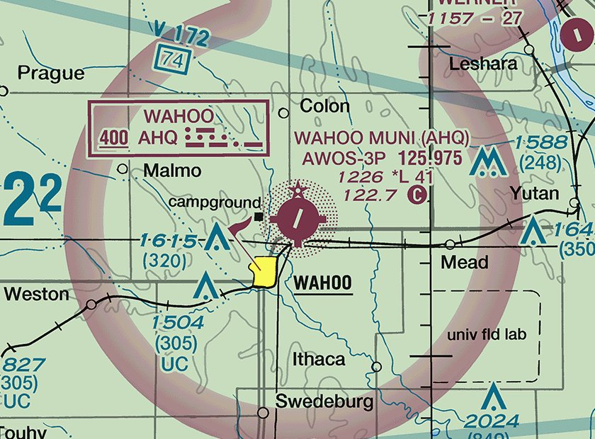
Excerpt: FAA Omaha sectional, edition September 3, 2026. Not for navigation. (Refer to the figure.) A remote pilot plans to fly a small UA at 300 ft AGL directly over WAHOO MUNI (AHQ). What airspace is it in, and is ATC authorization required?
AHQ has no dashed line around it, so there is no surface area, and the magenta vignette shows Class E beginning at 700 ft AGL. At 300 ft AGL the small UA is in Class G, which 14 CFR 107.41 does not list, although 107.43 still bars interfering with traffic at the airport (Chart Users' Guide, Class E Airspace).
Next question -
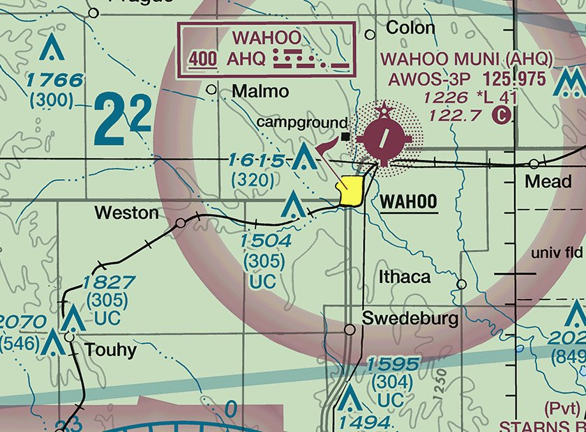
Excerpt: FAA Omaha sectional, edition September 3, 2026. Not for navigation. (Refer to the figure.) Near the town of WAHOO, what does UC mean under the obstruction labeled 1504 (305)?
UC beside an obstruction means it is under construction or has been reported, but its position or elevation has not been verified. Treat 1,504 ft MSL and 305 ft AGL as provisional and check the site during the preflight assessment of ground hazards (14 CFR 107.49; Chart Users' Guide, Land Features and Obstructions).
Next question -
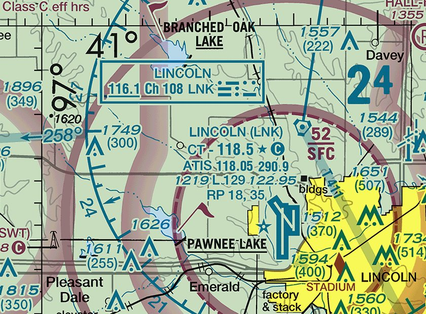
Excerpt: FAA Omaha sectional, edition September 3, 2026. Not for navigation. (Refer to the figure.) What are the approximate latitude and longitude of LINCOLN (LNK) airport?
The 41° parallel crosses the top of the excerpt and the 97° meridian runs down its left side, each ticked every minute. LNK lies about 9 minutes south of 41° and about 14 minutes east of 97°, so it is near 40°51'N, 96°46'W; the other choices put it north of 41° or west of 97° (Chart Users' Guide, Maximum Elevation Figure: ticked latitude and longitude lines).
Next question -
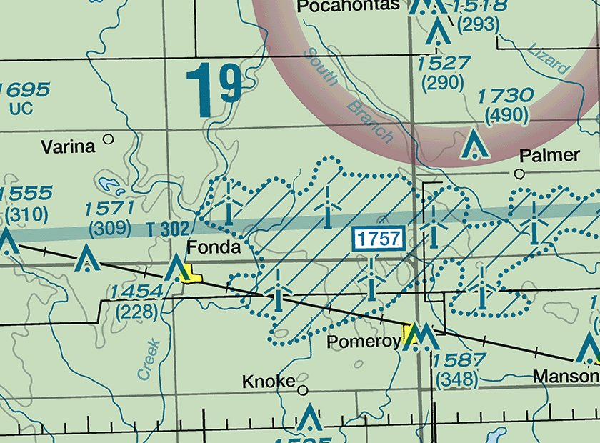
Excerpt: FAA Omaha sectional, edition September 3, 2026. Not for navigation. (Refer to the figure.) Between Fonda and Palmer is a hatched area with a dotted outline and the boxed figure 1757. What does it show?
Wind turbine farms are drawn as a hatched area with a dotted outline, and the boxed figure is the MSL elevation of the highest turbine in the farm. Blade tips are unlit and can reach well above the lighted hub, so plan a small UA's route and altitude to stay clear (Chart Users' Guide, Wind Turbine Farms).
Next question -
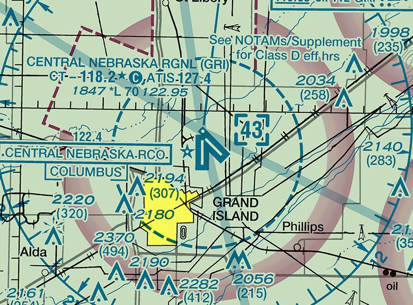
Excerpt: FAA Omaha sectional, edition September 3, 2026. Not for navigation. (Refer to the figure.) What does the star after CT - 118.2 in the CENTRAL NEBRASKA RGNL (GRI) data block mean?
A star after the tower frequency means the tower operates part-time, with hours in the chart's tower frequency tabulation and the Chart Supplement. The circled C after it shows that 118.2 becomes the CTAF when the tower is closed (Chart Users' Guide, Airports).
Next question -
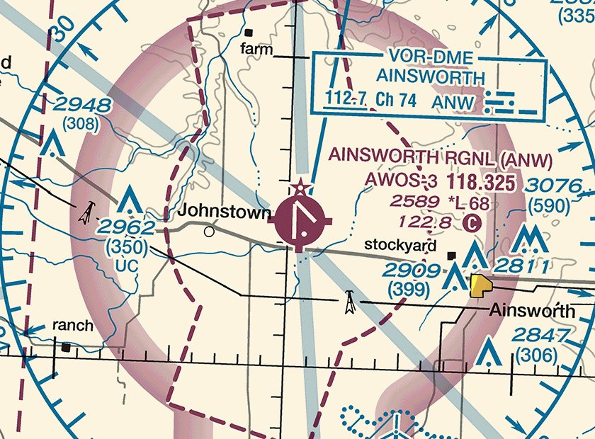
Excerpt: FAA Omaha sectional, edition September 3, 2026. Not for navigation. (Refer to the figure.) Which frequency provides automated weather observations for AINSWORTH RGNL (ANW)?
AWOS-3 118.325 in the airport data block is the automated weather observing system frequency. 122.8, followed by the circled C, is the CTAF, and 112.7 is the Ainsworth VOR-DME, whose underlined frequency means no voice is transmitted on it (Chart Users' Guide, Airports; Radio Aids to Navigation).
See your score
Your score
Answer all 25 questions to see your score here.
More chart questions, and the rest of the test
This free set stays free. The Premium Pack (CA$29, about US$21) adds 31 more image-based questions on sectional chart excerpts beyond these 25 (its chart file has all 56, these 25 marked), plus five 60-question mock exams and a 385-question study bank covering the five knowledge areas, as PDFs.
See the Premium Pack — CA$29 Free 60-question mock examAbout these questions
Before publishing, each question was solved twice without the answer key, from the image and the question alone, and each answer was checked against the FAA's Aeronautical Chart Users' Guide (effective July 9, 2026), 14 CFR Part 107, the AIM and, where they apply, the FAA's airport, airspace and obstacle data. Questions that failed a check were dropped, not edited until they passed.
The FAA says the images in live test questions cannot be previewed, and we have not seen them. Sectional charts are reissued every 56 days, so check the newest edition before you fly. For the symbols these questions use, read How to Read a Sectional Chart, and for the text-based airspace drill, try the Airspace practice test.